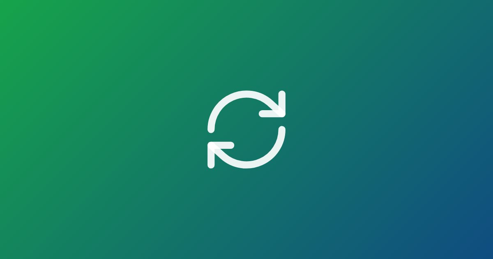

Beneficios ambientales y económicos de la economía circular
Reciclar no es solo cuidar el planeta: también reduce costos, recupera materiales valiosos y abre nuevas oportunidades de negocio. Mirá cómo aplicarla en tu empresa.

La economía circular propone un cambio de mirada: en lugar de fabricar, usar y descartar, busca que los productos y materiales permanezcan en uso el mayor tiempo posible. Aplicada a la tecnología, significa reparar, reacondicionar y reciclar equipos antes de pensar en descartarlos.
Los beneficios ambientales son directos: menos residuos en rellenos sanitarios, menor extracción de materias primas vírgenes y una reducción real de la huella de carbono asociada a la fabricación de equipos nuevos. Cada tonelada de metales y plásticos recuperada es una tonelada que no hace falta extraer de la naturaleza.
Pero el impacto no es solo ambiental. Para las empresas, sumarse a la economía circular también tiene sentido económico: reduce costos de disposición de residuos, mejora los indicadores ESG que hoy piden inversores y clientes, y en muchos casos abre la puerta a nuevas líneas de negocio ligadas a la sustentabilidad.
Además, mostrar un compromiso concreto con el reciclaje fortalece la marca empleadora y la reputación ante la comunidad, algo cada vez más valorado tanto por consumidores como por el talento que una organización busca atraer.
Sumar tu empresa a este modelo es más simple de lo que parece: alcanza con elegir un gestor especializado, como RAEE-Recycle, que se ocupe de todo el proceso y te entregue la trazabilidad y la documentación que necesitás.